Семінари · журнал «ДентАрт» 2013 №3 (72)
Міжнародний весняний семінар ДентАрт 2013. Стоматологія під збільшенням
DENTISTRY UNDER MAGNIFICATION
17-18 травня у Полтаві відбувся Міжнародний весняний семінар ДентАрт 2013 «Стоматологія під збільшенням». Ми попросили лекторів розповісти не лише про те, як вони використовують збільшення, але й про те, як це робити правильно — з користю для пацієнта і без шкоди для себе!
Усе видиме може бути також непобаченим, проте залишається все ж виявлюваним.
Едмунд Гуссерль
Вступним словом семінар відкрив Сергій Радлінський (Полтава, Україна), який зазначив, що збільшення завжди супроводжувало роботу стоматолога.
Перший елемент збільшення у стоматології, що завжди напохваті, — це увігнуте ручне дзеркало. Але у нас є різні пристосування, що допомагають розглянути деталі.
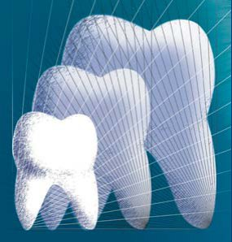
Наприклад, збільшуючи знімки на екрані цифрової камери, можна побачити деталі, невидимі оку. Об'єкт нашого втручання — зуб — настільки маленький, що лікування схоже на ювелірне мистецтво. Але ювелір ніколи не працює без збільшення. Сучасна цифрова епоха дає достатньо можливостей для збільшення. У клініці «Аполлонія» в кожному кабінеті є окуляри з двократним збільшенням, можна користуватися бінокулярами з чотирикратним збільшенням, а вершиною збільшення є операційний мікроскоп. Опанувати навички роботи з мікроскопом не так просто, і треба подумати, наскільки це необхідно. Звичайно, нам слід перебудовувати усю роботу і звикати до нових реалій.
Чи є реальною необхідність працювати зі збільшенням? На ці питання відповідали, сперечалися і відкривали секрети спікери семінару. Девізом семінару, підкреслив Сергій Радлинский, є слова філософа Григорія Сковороди: «Прагни до вершини і отримаєш середину».
Операційний мікроскоп в ендодонтії: що можна і як треба
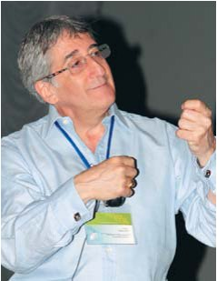
Джуліан ВЕБЕР (Лондон, Великобританія), екс-президент Британського ендодонтичного товариства, член Американської асоціації ендодонтистів, Європейського товариства ендодонтії, Академії Пьєра Фошара, головний редактор журналу «Ендодонтична практика», член редакційної ради видання «Приватна стоматологія», який неодноразово виступав на семінарах ДентАрт, відкрив програму весняного семінару ДентАрт 2013 лекцією, присвяченою збільшенню в цілому, використанню мікроскопа в ендодонтії, його дизайну і ергономіці застосування.
Роздільна здатність — це здатність технічної системи чітко розглядати або відтворювати два окремі об'єкти. Роздільна здатність ока лише 0,2 мм. Будь-які дві точки, розміщені на відстані менше ніж 0,2 мм одна від одної, сприймаються нами як одна, тобто менші відстані оком не визначаються. Проте діаметр кореневого каналу може становити 0,1 мм і менше. Більшість стоматологів використовують телескопічні лінзи або бінокулярні лупи. Це добрий початок у збільшенні, але він має свої недоліки. З таким збільшенням необхідно використовувати додаткове освітлення. Робота з такими лупами примушує оператора низько нахиляти голову і стомлює м'язи шиї. Максимальне збільшення, яке можна отримати з такими лупами, — приблизно 4-5-кратне.
На думку лектора, найефективнішим є використання операційного мікроскопа. Автор надає перевагу мікроскопам з оптичною системою Галілея, а це два паралельних незалежних світлових пучки, що плавно змінюють масштаб зображення, сформованого одним об'єктивом. Система вирізняється високою якістю зображення, гарантуючи високу роздільну здатність. І відстань між лінзою та об'єктивом може бути чітко спроектована щодо лікаря.
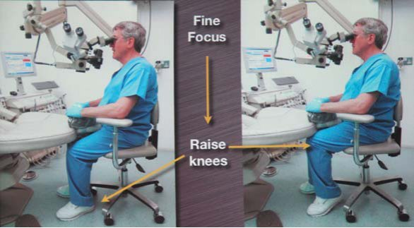
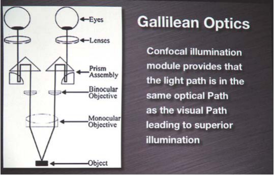
Прогрес у використання мікроскопа вніс Гаррі Карр, засновник Тихоокеанського ендодонтичного дослідницького товариства. У 1995 році він розробив правила ергономічної роботи з мікроскопом у чотири руки.
Мікроскопи можуть бути підлогові, настінні і зі стельовим кріпленням. З підлоговим мікроскопом робота буде менш ергономічною через обмежену мобільність персоналу і устаткування. Доктор Вебер використовує мікроскоп компанії Глобал з необхідними допрацюваннями для асистента, похилим блоком і адаптером для відеозйомки і фотографування.
Мікроскоп повинен завжди перебувати в одному і тому ж самому положенні. Передусім лікареві і пацієнтові треба зайняти правильні позиції, розмістити мікроскоп, визначити точний фокус, налаштувати міжзіничну відстань окулярів, якщо існує необхідність, налаштувати діоптрії під конкретне око. Окремо можна відзначити необхідність використання мікроскопічного блоку для асистента, інакше робота в парі буде менш ефективною.
Усі меблеві блоки кабінету повинні легко переміщатися навколо мікроскопа. Крісло пацієнта має бути максимально мобільним. Якщо обмежити рухи лікаря і пацієнта біля крісла, не потрібно багато простору. Кабінет із самого початку проектується за принципом круга дії. Це означає, що увесь інструментарій доступний у межах витягнутої руки. Лікар працює в положенні на 11 або 12 годину. При необхідності можна повертати голову пацієнта або рухати саме крісло, але голова пацієнта повинна бути фактично на колінах у лікаря, а руки лікаря — на підлокітниках крісла, щоб усі маніпуляції забезпечувалися простим розгинанням лише ліктьового суглоба. Лікар ніколи не повертає голови для того, щоб узяти інструмент, увесь інструментарій асистент вкладає йому в руки. Можна розробити свої сигнали комунікації між стоматологом і асистентом, і це полегшить роботу.
Що ж до спеціального інструментарію для роботи зі збільшенням, то якщо використати дзеркало звичайного розміру, яке розташовуватиметься близько до наконечника, видимість погіршується. Потрібні дзеркала меншого діаметру робочої частини з 100% здатністю відбиття. Можна використати дзеркала на довгій ручці, що дозволить розташовувати дзеркало за кілька міліметрів від зуба. При роботі зі збільшенням у мікрохірургії треба застосовувати спеціальні ретронасадки, мікродзеркала, мікроскальпелі і мікроекскаватори.
Комфорт при використанні операційного мікроскопа дозволяє простіше виконувати будь-які маніпуляції: забезпечити прекрасний доступ, діагностувати фрактуру, визначати наявність будь-яких каналів, кальцификатів, проводити лікування зубів зі складною анатомією, повторне лікування, ендодонтичну хірургію. Найкращий ультразвуковий апарат для ендодонтичного лікування, на думку Дж. Вебера, — Сателек П5 з усіма необхідними спеціалізованими для різних маніпуляцій насадками в достатній кількості. Також зручно для первинного розкриття каналу застосовувати інструменти типу Мікроопенер, які не закривають огляду під час лікування. Для візуалізації каналів, визначення тріщин можна використати фарбування метиленовим синім. Операційний мікроскоп абсолютно незамінний при закритті широких апікальних отворів, перфорацій, складних обтураціях. На думку видатних ендодонтистів, видалення зламаного інструмента без збільшення неможливе. Причому, чим глибше він міститься в каналі, тим більше збільшення потрібне. Літературні дані говорять про те, що використання мікроскопа в хірургії також дає кращі результати.
На закінчення лекції доктор Вебер закликав використовувати мікроскоп для всіх стоматологічних маніпуляцій, але для цього необхідно навчитися правильно з ним працювати. Це убереже оператора від помилок і розширить можливості лікування.
Мікрохірургія пародонту зі збільшенням
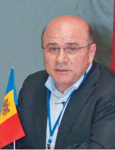
Валеріу ФАЛА (Кишинеу, Молдова), доктор медицини, доцент ДУМіФ ім. Ніколає Тестеміцану, головний лікар стоматологічної клініки «Фала-Дентал», Призма-чемпіон Молдови 2001 і 2004 років, автор численних публікацій в журналі «ДентАрт», зазначив, що не всі стоматологи сьогодні згодні працювати зі збільшенням, оскільки робота з мікроскопом більш затратна за часом. Проте тільки коли працюєш зі збільшенням, приходить усвідомлення, що є й інша стоматологія, де можна побачити і врахувати невидиме неозброєним оком. Є ще один мало згадуваний психологічний момент, на який стоматологи часто не звертають уваги. Під час роботи стоматолог низько схиляється над пацієнтом, вторгаючись таким чином в його інтимний простір. При використанні мікроскопа відстань між пацієнтом і лікарем збільшується до 40 см і, природно, зникає момент негативної психологічної дії на пацієнта.
Ні у кого не виникає сумнівів, що застосування мікроскопа позитивно позначається на якості лікування. Також на досягнення довготермінового результату лікування і усунення пародонтологічних дефектів впливатимуть такі чинники, як співпраця пацієнта, планування лікування, дотримання хірургічного протоколу, власне робота з м'якими тканинами, післяопераційне ведення рани, досвід лікаря. Сучасний підхід до лікування має бути командним, і стоматологічну допомогу надають кілька лікарів: хірург, ортопед, ортодонт, терапевт, зубний технік, пародонтолог, асистент стоматолога.
Використовуючи мікроскоп у хірургічній практиці, можна видаляти під візуальним контролем грануляційну тканину, проводити кюретаж, очищати поверхню операційного поля, ретроградно пломбувати кореневий канал, при резекції верхівки кореня накладати мінімально-інвазивні шви і багато що інше. Лектор продемонстрував кілька клінічних випадків з використанням мікроскопа. Один з них — операція резекції верхівки кореня. На думку доповідача, необхідно проводити зріз верхівки кореня не менше 3 мм, оскільки в цій зоні спостерігається найбільша кількість латеральних канальців, які іноді неможливо побачити навіть під збільшенням. За літературними даними, рекомендовано видаляти ці 3 мм для запобігання ускладненням. Використання мікроскопа і ультразвуку дозволяє максимально точно провести ретроградну обтурацію магістрального каналу МТА. Далі під збільшенням дефект заповнюється кістковопластичним матеріалом і операційна рана закривається стимулятором регенерації — центрифугованою тромбоцитарною масою крові пацієнта. Уже через місяць можна відзначити добрий результат загоєння, і його досягнуто завдяки використанню мікроскопа.
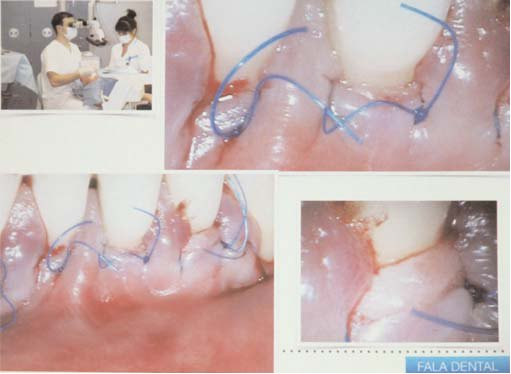
Клаптеві операції при рецесії ясен навколо зубів та імплантатів, за відсутності зубів, при поглибленні переддвер'я, укороченні вуздечки, подовженні коронкової частини зубів, відкриванні зуба, що не прорізався, треба виконувати з найкращою візуалізацією. За даними клінічних досліджень, кожен циркулярний розріз навіть при здоровому пародонті призводить до втрати 1 мм м'яких тканин. Оптимальних естетичних результатів при хірургічних втручаннях з тонким фенотипом ясен можна досягти лише з найкращою візуалізацією, малоінвазивністю розрізів і точністю швів. І якщо висока прогнозованість результату є нашою метою, використання мікроскопа — одна з важливих умов.
Мінімально-інвазивний ендодонтичний доступ у зубах зі складною анатомією
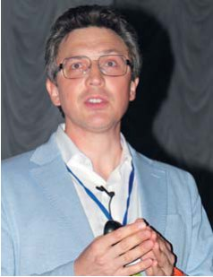
«Коли я почав працювати зі збільшенням — я почав бігати на роботу підстрибом. Тому що мені було цікаво», — почав свою лекцію Олексій БОЛЯЧИН, знайомий нашим читачам численними публікаціями і лекціями на семінарах ДентАрт, член Американської ендодонтичної асоціації, Європейської асоціації дентальної мікроскопії, головний редактор журналу «Эндодонтия».
Збільшення і освітлення відіграють важливу роль в ендодонтичному лікуванні. На сьогодні саме технічне забезпечення і оснащення дає нам певні можливості. Лікар-ендодонтист повинен мати наконечник з підвищуючим редуктором 5:1, оскільки доступ за допомогою турбінного наконечника виконується на швидкості 200 тисяч оборотів і неконтрольовано, і якщо оператор недостатньо досвідчений і не знайомий з анатомією, легко зробити перфорацію. Не можна використовувати турбінний наконечник з бором на довгій ніжці, це призводить до великої втрати тканин зуба. Бори Мюнс Дискавері Бурс/Munce Discovery Burs з робочою довжиною 34 мм можна використовувати в складних клінічних випадках для створення доступу або виконання яких-небудь складних маніпуляцій. Для знаходження устя або додаткових кореневих каналів потрібні два типи зондів: DG-16, D-17. Також необхідно використовувати високоякісні дзеркала, причому ставитися до них як до витратного матеріалу, вчасно змінюючи на нові.
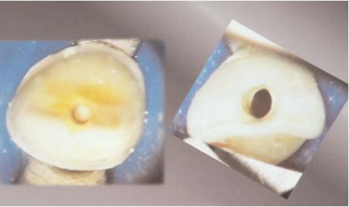
Існує кілька головних правил створення доступу до кореневих каналів:
- Правило колірної зміни — дно завжди темніше, ніж стінки порожнини зуба.
- Правило локалізації усть — при правильно створеному доступі устя завжди в місці переходу дна до висхідних стінок порожнини.
- Правило центрального положення — порожнина зуба завжди займає центральне положення в зубі, і дуже важливо проаналізувати форму кореня на рівні шийки, оскільки порожнина зуба завжди повторює форму шийки зуба на рівні емалево-цементного з'єднання.
- Вторинний дентин має світліше забарвлення, тому можна легко за допомогою ультразвуку видалити білястий карниз, який прикриває устя.
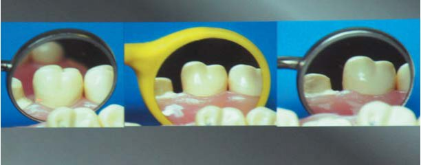
Наші знання про кількість каналів із застосуванням збільшення удосконалюються. Лектор розглянув типові помилки при формуванні доступу в зубах різних груп. У нижніх різцях два канали визначаються в 46% випадків — у латеральних різцях і в 44% — у центральних. Будова нижніх різців, як правило, не білатеральна, хоча бувають винятки. Традиційний доступ нерідко помилково здійснюється через язичну поверхню кулястим бором №2 (овальна форма), що часто призводить до невиявлення язичного каналу. Доступ у нижніх різцях має бути зміщений до ріжучого краю, якщо немає можливості робити доступ з вестибулярної поверхні. Другий канал у цій групі зубів найчастіше стрічкоподібний і залишається недообробленим, особливо при обтурації в класичній техніці.
Будова перших премолярів: 54% зубів — однокореневі, 22-25% — двокореневі, а 24% зубів мають S-подібний вигин. Один зі способів діагностики двоканального премоляра — ознака раптового зникнення каналу на рентгенограмі. Традиційний доступ у премолярах починається з центральної фісури, розширюючи доступ до вершини щічного горбка (овальна форма доступу), оскільки центральна лінія кореня проходить через вершину щічного горбка. Важливо пам'ятати, що нижні премоляри дуже часто нахилені, а оператори нерідко не враховують цей факт і перерозширяють доступ. Другі премоляри нижньої щелепи в 97% зубів мають один канал, наявність другого каналу у перших премолярах нижньої щелепи спостерігається приблизно в 9%, а двох апікальних отворів — у 8%. Форма нижніх премолярів овальна, часто виявляється проксимальне відгалуження у вигляді замкової щілини.
Перші моляри нижньої щелепи: в 90% зубів канали у передньому корені мають окремі апікальні отвори, а решта 10% мають загальний апікальний отвір. У 35% випадків у зубі є чотири канали. Медіальні канали, як правило, зігнуті, особливо медіально-щічний. Часто зустрічається викривлення у щічно-язичному напрямі. Третій корінь має різкий вигин, невидимий на рентгені. Будьте акуратні при препаруванні язичного каналу, щоб уникнути поломки інструменту. Всі нижні моляри на глибині 4 мм мають перешийок. Це одна з причин частого переліковування каналів у нижніх молярах. Приблизно 5% нижніх молярів мають третій канал у передньому корені. Медіальна межа порожнини зуба відповідає лінії, що сполучає верхівки медіальних горбків. Тому межа порожнини зміщена до премоляра. Дистальна межа сполучає язичну фісуру зі щічною. Форма сформованої порожнини трикутна або прямокутна для полегшення пошуку четвертого каналу в дистальному корені. Перший моляр верхньої щелепи — найбільший за величиною і один із функціонально найзначущіших зубів. Піднебінний корінь відхилений від осі зуба і має вигин у щічному напрямі, невидимий на знімку. Дистальний канал конусний і найчастіше прямий. Медіальна межа доступу проходить, сполучаючи верхівки медіальних горбків. Дистальна межа приблизно відповідає косій фісурі. Додатковий щічний канал зустрічається в 96% випадків, але виявляється без мікроскопа або бінокулярів лише в 73% зубів. Усі ці орієнтири при вторинній ендодонтії можуть бути нівельовані.
«Будемо реалістами, — підсумував лектор. — Ми робили, продовжуємо робити і робитимемо непогане ендодонтичне лікування без мікроскопа. Але реальний прорив у знаннях з анатомії будови системи кореневих каналів настав лише з впровадженням у клінічну практику операційного мікроскопа».
Здорові зуби під мікроскопом: чистити чи не чистити?
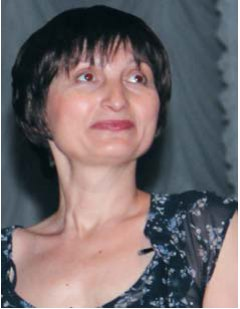
Ольга ЖАУРА (Дніпропетровськ, Україна) — представник компанії Орал-Бі, одного з традиційних партнерів семінарів ДентАрт.
Якщо подивитися на зуби під мікроскопом, відкриється цікава картина — практично ціле місто в порожнині рота: колонії бактерій, які утворили свої мегаполіси на зубах і в міжзубних проміжках, в зубоясенній борозні, на язику. Причому біоплівка — це не аморфне з'єднання, а живий організм, який живе за своїми законами, впорядкованими взаємодіями. Усе залежить від стадії формування біоплівки. На першій стадії відбувається первинна адгезія мікроорганізмів. Це переважно грампозитивна мікрофлора. Потім відбувається зростання, дозрівання і заміщення грампозитивних форм грамнегативними. Найнебезпечніша третя стадія формування біоплівки, коли відбувається від'єднання патогенної біоплівки і розвиток нових бактерій. Чим більше біоплівки, тим агресивніші токсини продукуються мікроорганізмами. Тому її регулярне видалення є завданням і пацієнта, і лікаря для того, щоб зберегти здорові зуби.

Існує два методи видалення біоплівки — механічний і хімічний. Механічний спосіб — це очищення електричними зубними щітками, наприклад компанії Орал-Бі. Їх перевагою є 3D-технологія, поєднання зворотнообертальних і пульсуючих рухів. Це дозволяє якісно видаляти біоплівку, добре розпушувати ту, що вже злежалася і утрамбувалася. Досить прикладати щітку до кожного зуба, щоб щетинки якомога глибше проникли в міжзубні проміжки. Переваги електричної щітки перед мануальними вже давно доведені, особливо це актуально в пришийкових ділянках і на дистальних поверхнях зубів, де і відбувається основна локалізація бактеріального нальоту.
Хімічний метод видалення біоплівки — це дія пастами, обполіскувачами і т. д. Остання розробка компанії «Проктер енд Гембл» — зубна паста Бленд-а-мед Про-Эксперт із захистом стабілізованим фторидом олова і поліфосфатом. Дуже важливо підтримати гемостаз у порожнині рота, підібрати такі компоненти, які не впливають на позитивні властивості біоплівки. Саме фторид олова має такі можливості, тому що його дія в основному бактеріостатична. Він впливає на метаболічну активність бактерій, пригнічуючи їх активність. Це стосується як карієсогенних, так і пародонтитогенних бактерій.
Існує думка, що найголовніше — це механічна дія. Справді, це основа основ, проте зубна паста дозволяє знизити утворення біоплівки упродовж дня.
Пацієнти з правильно підібраними засобами гігієни можуть зберегти і здоров'я зубів, і добрий результат правильного стоматологічного лікування.
Зуботехнічні реабілітаційні техніки з оптичним збільшенням
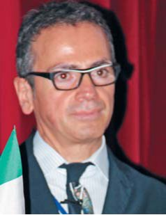
Ромео ПАСЧЕТТА (Кьєті, Італія) — не перший зубний технік на сцені семінарів ДентАрт, але один з перших таких іменитих лекторів, котрі зуміли не лише утримати увагу лікарського співтовариства, але й відкрити нове у рамках теми. Він розробив нову техніку для точного литва і давно спеціалізується у застосуванні стереомікроскопа, яким користується впродовж усіх фаз роботи, щоб досягти максимальної точності і кращої естетики.
У реальності пропорції форми, досконалість творіння — це саме те, що стоматолог шукає щодня у своїй роботі. У роботі стоматолога відтворення натуральних зубів — це пошук пропорцій. Для цього нам потрібні відповідні інструменти. Як сказав Галілео Галілей: «У визначенні божественної пропорції філософія написана Всесвітом, який постійно відкритий нашому погляду. Але вам вона не буде зрозуміла, доки ви не опануєте мову символів, якими вона написана».
Для нас найліпшим результатом буде точне відтворення тканин натурального зуба. Відтворити натуральні тканини дуже складно. Якщо розглянути роботи, які виконали ми самі багато років тому, можна побачити ускладнення в ділянці крайового прилягання. Ці ускладнення — результат поганої комунікації стоматолога із зубним техніком. Але сьогодні відбувся розвиток комунікації між клінікою і технічною лабораторією. Ми маємо безліч можливостей естетичної візуалізації. Зубний технік має можливість працювати зі стоматологами по всьому світу, і найголовніша мета — це задоволеність наших пацієнтів виконаним лікуванням. Навички стоматолога і зубного техніка — найважливіше для пацієнта, від цього залежить майбутній результат лікування.
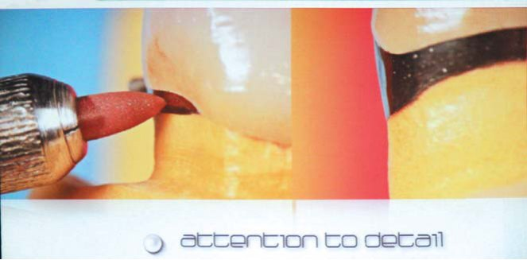
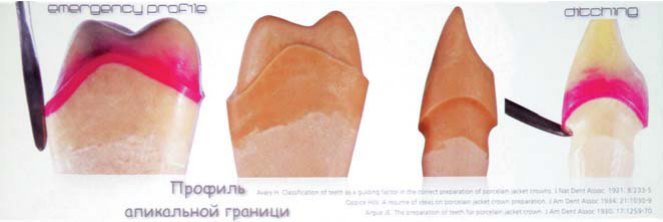
Найголовніше у непрямих реставраціях — це фокусуватися в приясенній ділянці переходу, щоб тканини ясен «не бачили» різниці між штучними і натуральними тканинами. Усе розпочинається зі зняття відбитка. Отримання точного зображення фінішної лінії — результат злагодженої роботи лікаря, правильно виконаного фінішного препарування і зняття відбитка. Але технік теж несе відповідальність за збереження і чіткість переходу вже на гіпсовій моделі. Дуже важливо при виготовленні гіпсового стовпчика не пошкодити цю зону, залишаючи невеликий проміжок навколо майбутньої роботи. Така робота повинна виконуватися під мікроскопом і з боку лікаря, і з боку зубного техніка.
Сьогодні у нас є маса різних матеріалів. Це техніка виготовлення класичної металокераміки, використання системи Каптек, цирконію, безметалових систем і т. д. Необхідно знати, як правильно працювати з кожною системою. Неможливо використовувати один матеріал в усіх клінічних випадках. Вибір матеріалу залежить від конкретного клінічного випадку. Згадаймо часткові золоті коронки і вкладки, які використовуються з 1906 року. Вони відстояли своє право на існування своєю довговічністю. Звичайно, на сьогодні це не ідеальне відтворення естетики, але багато техніків люблять такі відновлення, тому що можуть гарантувати довготерміновий результат, хороші оклюзійні співвідношення і відмінне прилягання.
Так, в натуральному зубі немає металевої субстанції, а нам важливо відновити і естетику, і анатомію у пришийковій ділянці, особливо по вестибулярній поверхні. Світло не проходить крізь метал. При використанні безметалових конструкцій проблем з естетикою і співвідношенням з ясенною тканиною у пришийковій зоні буде менше, але не завжди є можливість застосовувати безметалові конструкції в усіх клінічних випадках. Багато лікарів і техніків намагаються вивести зі своєї практики металеві конструкції, але в реальності це 70% виконаних робіт.
Препарування на рівні ясен, нижче або вище за рівень ясен є правом вибору лікаря і залежить від багатьох чинників, таких як матеріал коронки, естетична складова лікування, якість ясенних тканин і т. д. Але якщо уникнути переходу металевого краю коронки на корінь зуба неможливо, то важливим аспектом стає чистота самого металу, міцність і стабільність краю коронки.
Після нанесення кераміки може виникнути усадка або відшаровування металу, і тому добрий результат розпочинається з копітких дрібних деталей: отримання відбитка, робочої моделі, гіпсового стовпчика, нанесення воску і обробки в зоні ясенного краю.
Найліпший, на думку лектора, варіант металокерамічних конструкцій запропонували відомий лікар Іцхак Шоер і дослідник Аарон Уайтме. Вони запропонували в 1972 році використати композитний метал Каптек, який має платиново-золоту композитну структуру. З цією системою можна не лише отримати дуже добрий результат і стабільність в зоні краю коронки, але й змінити форму ковпачка для посилення міцності при навантаженнях. Навіть якщо об'єм кераміки буде великим, то крайове прилягання не порушиться, ковпачок витримує значні оклюзійні навантаження і має унікальну адгезію з керамікою. «Теплий» колір ковпачка полегшує досягнення естетичного результату.
Яку безметалову техніку можна застосувати при виготовленні мостовидної конструкції? Звичайно, це цирконієві конструкції. При виготовленні протяжних металокерамічних конструкцій автор не вирізує стовпчики. Це дозволяє відтворити точне розміщення кукс опорних зубів у порожнині рота, хоча й ускладнює роботу техніка. Завданням техніка є точне відтворення тканин за відсутності етапу підгонки цієї роботи. Якісний відбиток дозволяє зробити повне відновлення зубних рядів за одне відвідування. Планування, попереднє воскове моделювання, виготовлення тимчасових коронок дозволяють бачити всі аспекти впливу на тканини, що оточують зуб, мотивацію пацієнта.
Великого поширення набувають цифрові технології. Один з найліпших варіантів передачі інформації між віддаленими один від одного стоматологом і зубним техніком — цифровий відбиток, що передається через Інтернет. Фото-, відеоінформація, яка передається по Інтернету, стирає відстані між операторами. А використання мікроскопа і стоматологом, і зубним техніком дозволяє їм бачити необхідні деталі і межі точніше. Ідеал недосяжний, але прагнути до нього необхідно.
Роль мікроскопа в непрямій реставрації, ергономіка — ламаємо стереотипи!
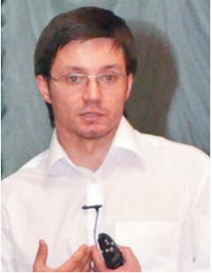
Назарій МИХАЙЛЮК (Івано-Франківськ, Україна) — молодий, але вже досить відомий лектор, який спеціалізується в основному в непрямій реставрації зубів близько 4-х років.
Раніше говорили, що головне для стоматолога — тактильні відчуття і його руки. Сьогодні все актуальнішим стає формулювання, що вилікувати можна тільки те, що бачиш. Оптичне збільшення дає можливість чітко візуально контролювати всі етапи лікування пацієнта і досягти прогнозованого позитивного результату.
Багато хто вважає, що мікроскоп потрібний лише для ендодонтичного лікування, але збільшення потрібне, починаючи від аналізу клінічної ситуації — до фіксації готової реставрації і контролю за якістю лікування через деякий час. Причому для отримання доброго результату зі збільшенням також повинен працювати і зубний технік. За даними літератури, причинами видалення зубів у 59% ускладнень є незадовільні реставрації (прямі і непрямі), у 32% — ускладнення з боку пародонту, 8% — ендодонтичні ускладнення. Саме підвищення точності роботи страхує нас від розвитку ускладнень. На думку лектора, операційний мікроскоп через 5 років буде так само поширений, як зараз рентгенівський апарат.
Як можна об'єднати препарування зубів з великою кількістю рухів і роботу з мікроскопом? При роботі з мікроскопом потрібне крісло з двома підлокітниками. 90% робочого часу лікар перебуває в положенні на 12 годину відносно пацієнта, це положення оптимальне, тому що лікар бачить осі зубів і має доступ до усіх їх секстантів. При роботі в 4-му секстанті можна бути в положенні на 9 годину. Позитивні аспекти збільшення в непрямій техніці: візуалізація усіх деталей, точний контроль за якістю роботи, правильне положення лікаря під час роботи, можливість документації.
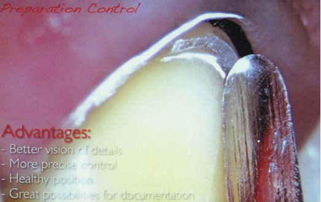
Мікроскоп можна використати вже на етапі аналізу клінічної ситуації і на багатьох інших етапах в непрямій реставрації: контроль препарування, ретракції, контроль прилягання непрямих реставрацій. Для планування лікування лікареві потрібна інформація — пакет фотографій, відеоролики. Необхідно документувати не лише макроестетику, але й усі етапи лікування — препарування, відбитки і т. п. Також це треба для мотивації пацієнта. Фотографуючи, лікар знову ж таки під збільшенням зможе контролювати стан м'яких тканин після препарування, поверхню зуба після фінішної обробки, прилягання між зубом і непрямою реставрацією. Під час фотографування, використовуючи різні поляризаційні фільтри, можна побачити насиченість, контрастність і різні структурні елементи зубів. Це особливо актуально при виготовленні безметалових реставрацій.
Усе препарування можна умовно поділити на дві фази. У першій фазі воно проводиться за 0,5 мм до ясен крупнозернистими борами з потужністю наконечника, що підвищує, близько 70%; у другій фазі після ретракції проводиться препарування нового рівня уступу дрібнозернистими борами за потужності наконечника 30-40%. Для зняття напливів на поверхні уступу і при глибокому препаруванні після зняття коронки можна використати шліфувальні гумки, емалеві ножі, і це забезпечить точніше прилягання виготовленої коронки. Проте у зубного техніка для виконання роботи найвищої прецизійності мікроскоп має бути з більшим збільшенням, ніж у лікаря.
Збільшення дозволить стоматологові отримати багато плюсів, зазначив доповідач: поліпшиться якість роботи, з'явиться можливість підняти вартість лікування, нарешті, для стоматолога професія стане цікавішою. Гасло від Назарія Михайлюка, що прозвучало наприкінці лекції: якщо не боятися змінюватися, якщо сьогодні почати робити те, що інші робити не хочуть, то завтра ви робитимете те, що інші не зможуть.
Мікровізуалізація з'єднання реставрації і зубних тканин
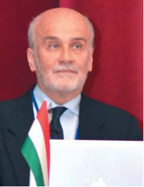
Пол ГЕРЛОЧІ (Будапешт, Угорщина) — доцент Стоматологічної школи і Університету Сегеда, член Угорської асоціації стоматологів, президент-засновник Угорської академії естетичної стоматології, дійсний член Британської академії естетичної стоматології і асоційований член Європейської академії естетичної стоматології, член Європейської секції Міжнародного коледжу стоматологів, який ще не відомий широкому слухачеві в країнах СНД як лектор, але вже підкорив слухачів у рамках весняного семінару ДентАрт, зазначив: «Кожна дрібниця має значення!»
Можна отримати знання і навички, проте без належного оптичного збільшення їх неможливо застосувати на практиці. Тільки використання збільшення зробить лікування результативним. Будь-який стоматолог, котрий почав використовувати збільшення, може розділити свою кар'єру на два етапи: до застосування збільшення і після. Збільшення змінює якість роботи і ставлення до виконуваної маніпуляції. Важливо позбавитися колишніх звичок, наприклад, виключити сидяче положення пацієнта. Існують точні докази, що застосування навіть незначного збільшення знижує ризик напруги в спині. Мікроскоп може бути використаний при проведенні усіх стоматологічних процедур. Існує думка, що застосування збільшення в ортодонтії не таке потрібне, проте є публікації, які доводять важливість застосування мікроскопа і в цій дисципліні.
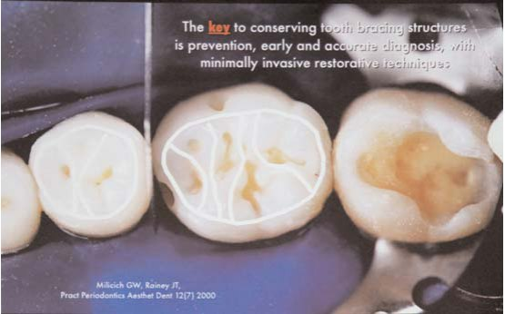
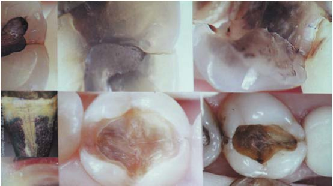
При використанні мікроскопа на більш ранніх етапах можна виявити мінімальні інвазії, це дозволить запобігати появі великих порожнин у майбутньому, максимально зберігати оклюзійну поверхню, запобігати тріщинам. За допомогою мікроскопа можна не лише мінімально відпрепарувати каріозну зону, але й успішно відновити зуб. Нерідко для виявлення дефекту досить збільшення і навіть не треба використовувати рентгендіагностику. За наявності мікроскопа діагностувати карієс дуже просто і можна не використовувати карієс-маркери. Під збільшенням добре діагностуються тріщини, це поліпшує тактику лікування і застерігає від подальших ускладнень. У 60-70% випадків при видаленні великих пломб діагностують тріщини, які переважно протікають безсимптомно. З великим збільшенням можна побачити неочищену поверхню і навіть біоплівку, а це важливо для адгезії до поверхні зуба. При застосуванні техніки тотального протравлювання під збільшенням видно ділянки непротравленої емалі — наслідок наявності біоплівки.
Раніше відстань між технічною лабораторією і лікарем відігравала безпосередню роль у термінах лікування. Тепер відбитки, виготовлення моделей, їх сканування і передача інформації електронною поштою значно економлять час. Препарування через Мок-ап модель дозволяє проводити малоінвазивне препарування. Збільшення дозволяє застосовувати безпрепарувальні техніки при оральному нахилі зуба або при легкому стиранні.
Сьогодні ми багато говоримо про точне крайове прилягання. Дуже багато матеріалів мають хороші властивості, але найголовніше те, як виконано препарування, за допомогою відбитка передана інформація в лабораторію і чи зможе технік відтворити і точно обробити край коронки або вініра. Недосяжний ідеал прилягання — 0 мікрон. У літературі думки про допустимі межі похибки розходяться. Асоціація Американських стоматологів прийняла величину 50 мікрон, це та критична величина проміжку, перевищуючи яку, ми ризикуємо отримати запальний процес або розгерметизацію реставрації. Щоб побачити цей проміжок, потрібне мінімально 4-кратне збільшення.
Таким чином, використання операційного мікроскопа дозволяє стоматологові контролювати всі етапи роботи і бути упевненим у досягнутих результатах.
Семінар пройшов на одному диханні. Інформаційна та емоційна складові підкорили слухачів, які не скупилися у своїх оцінках семінару. Одні слухачі ставили питання, де роздобути вільні фінанси на мікроскоп, інші — де його розмістити, треті вже займали чергу за бінокулярами, але всі утвердилися на думці про необхідність постійного використання збільшення у повсякденній практиці. А отже істину було знайдено!
До нових зустрічей на семінарах ДентАрт!
Фото Юрія Дяченка, Тамари Мироненко